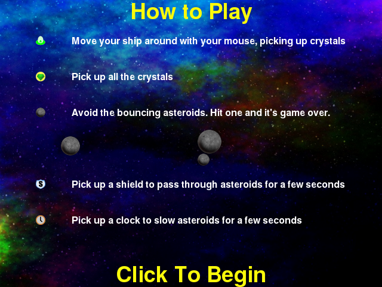

Instructions Step¶
The Instructions step displays information about the game elements and how to play Asteroid Impact.
JSON Configuration for Instructions Step¶
Below is sample JSON for a instructions step will all the options specified.
{
"action": "instructions",
"duration": 30.0,
"trigger_count": 10
},
duration- The number of seconds to show the step for. When omitted, a “Click to continue” prompt is added below the bottom option that allows the player to advance to the next step when they are ready.
trigger_count- The number of incoming trigger pulses until this step automatically advances. When omitted, a “Click to continue” prompt is added below the bottom option that allows the player to advance to the next step when they are ready.